Part 1.2: Classical Denoising
I applied Gaussian blur (kernel_size=5, sigma=2) as a classical denoising method. This low-pass filter smooths noise but cannot distinguish between signal and noise, resulting in blurry outputs that fail to recover image structure.

Noisy Campanile at t=250
Noisy Campanile at t=500
Noisy Campanile at t=750
Gaussian Blur Denoising
at t=250
Gaussian Blur Denoising
at t=500
Gaussian Blur Denoising
at t=750
Part 1.3: One-Step Denoising
Using the pretrained UNet, I estimated the noise in the image and recovered the clean image in one step:
The UNet takes the noisy image, timestep, and text prompt embeddings as input to predict the noise.

Original
Noisy
at t=250
One-Step Denoised
at t=250
Noisy
at t=500
One-Step Denoised
at t=500
Noisy
at t=750
One-Step Denoised
at t=750
Part 1.4: Iterative Denoising
Instead of one-step denoising, I implemented iterative denoising using the DDPM update rule. Starting from a noisy image, I created strided timesteps (stride=30 from 990 to 0) and iteratively refined the image using the formula:
At each step, I computed \(\alpha\), \(\beta\) from the noise schedule, estimated \(\hat{x}_0\) from the current noisy image, then interpolated between \(\hat{x}_0\) and \(x_t\) with added variance.
Denoising Process
The images below show the noisy Campanile at different timesteps (gradually becoming less noisy):
 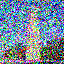
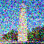
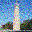
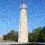
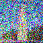
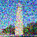
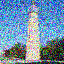
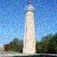
Noisy Campanile at t=690 -> t=540 -> t=390 -> t=240 -> t=90
Comparison
 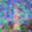
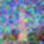
Original -> Iteratively Denoised -> One-Step Denoised -> Gaussian Blurred
Observations: Iterative denoising produces the cleanest result. One-step denoising shows more artifacts, and Gaussian blur fails to recover structure.
Part 1.5: Diffusion Model Sampling
By setting i_start=0 and starting from pure Gaussian noise, I used iterative_denoise to generate entirely new images from scratch with the prompt "a high quality photo".
5 samples generated from pure noise
Part 1.6: Classifier-Free Guidance (CFG)
To improve sample quality, I implemented CFG which combines conditional and unconditional noise estimates:
At each denoising step, I computed both conditional (with prompt) and unconditional (empty string) noise estimates, then extrapolated beyond the conditional estimate for stronger guidance.
5 CFG-guided samples (gamma=7)
Part 1.7: Image-to-Image Translation
Using SDEdit, I edited existing images by adding noise to a specific level (controlled by i_start) and then denoising with CFG. Lower i_start means more noise and more creative freedom; higher i_start preserves more of the original structure.
Campanile

Original -> i_start = 1, 3, 5, 7, 10, 20
My Test Image 1

Original -> i_start = 1, 3, 5, 7, 10, 20
My Test Image 2

Original -> i_start = 1, 3, 5, 7, 10, 20
Part 1.7.1: Editing Hand-Drawn and Web Images
SDEdit works especially well for projecting non-photorealistic inputs onto the natural image manifold.
Web Image
 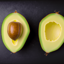
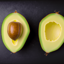
i_start = 1, 3, 5, 7, 10, 20, 25
Hand-Drawn Image 1
i_start = 1, 3, 5, 7, 10, 20, 23
Hand-Drawn Image 2
 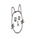
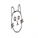
i_start = 1, 3, 5, 7, 10, 20, 30
Part 1.7.2: Inpainting
I implemented inpainting using the RePaint approach: at each denoising step, I kept pixels outside the mask from the original image (noised to the current timestep) while allowing the model to generate new content inside the masked region.
Campanile Inpainting


Original -> Mask -> Inpainted
My Image 1 Inpainting
Original -> Mask -> Inpainted
My Image 2 Inpainting

Original -> Mask -> Inpainted
Part 1.7.3: Text-Conditional Image-to-Image Translation
Instead of a generic prompt, I used specific text prompts to guide the transformation toward new semantic content while preserving spatial structure.
Campanile -> "an oil painting of people around a campfire"

Original -> i_start = 1, 3, 5, 7, 10, 20
My Image 1 -> "a pencil sketch of a young woman"
Original -> i_start = 1, 3, 5, 7, 10, 20
My Image 2 -> "a watercolor of mountains"

Original -> i_start = 1, 3, 5, 7, 10, 20
Part 1.8: Visual Anagrams
Visual anagrams are images that show one thing upright and a different thing when flipped 180°. I implemented this by computing noise estimates for both orientations and averaging them:
At each step, I computed the CFG noise estimate for prompt 1 on the normal image, then flipped the image, computed the noise for prompt 2, flipped the result back, and averaged the two estimates.
Illusion 1: Young Woman <-> Flowers in a Vase
"a pencil sketch of a young woman" <-> "a pencil sketch of flowers in a vase"
Illusion 2: Mountains <-> Valleys
"a watercolor of mountains" <-> "a watercolor of valleys"
Part 1.9: Hybrid Images
Hybrid images appear as one thing from afar (low frequencies) and another up close (high frequencies). I combined noise estimates using frequency filtering:
I applied Gaussian blur (kernel_size=33, sigma=2) to get the low-pass component from prompt 1, and subtracted the blurred version from prompt 2's estimate to get the high-pass component.
Hybrid 1: Skull (far) + Waterfalls (close)
"a lithograph of a skull" (low freq) + "a lithograph of waterfalls" (high freq)
Hybrid 2: Old Man (far) + Campfire (close)
"an oil painting of an old man" (low freq) + "an oil painting of people around a campfire" (high freq)
Part B: Flow Matching from Scratch
In Part B, I trained my own flow matching model on MNIST from scratch, implementing UNet architectures with time and class conditioning, and exploring iterative denoising for generative tasks.
Part B.1: Training a Single-Step Denoising UNet
1.1 Implementing the UNet
I implemented a UNet architecture consisting of downsampling and upsampling blocks with skip connections. The network uses the following building blocks:
Conv: A standard convolutional block with Conv2d (kernel=3, stride=1, padding=1), BatchNorm2d, and GELU activation. This maintains spatial resolution while changing channel dimension.
DownConv: A downsampling block with Conv2d (kernel=3, stride=2, padding=1), BatchNorm2d, and GELU. This reduces spatial resolution by half.
UpConv: An upsampling block with ConvTranspose2d (kernel=4, stride=2, padding=1), BatchNorm2d, and GELU. This doubles the spatial resolution.
Flatten/Unflatten: Flatten uses view() to reshape the 7x7 feature map to a 1D vector. Unflatten reshapes back to 7x7 spatial dimensions.
The UNet encoder progressively downsamples the input while increasing channels, and the decoder upsamples while using skip connections to preserve fine details from earlier layers.
1.2 Using the UNet to Train a Denoiser
The denoiser is trained using L2 loss to map noisy images \(z\) to clean images \(x\):
Training data pairs are generated using the noising process:
Visualization of Noising Process
Noising process with sigma = [0.0, 0.2, 0.4, 0.5, 0.6, 0.8, 1.0]
1.2.1 Training
I trained the denoiser with sigma = 0.5 for 5 epochs using Adam optimizer (lr=1e-4), batch size 256, and hidden dimension D=128.
Training Loss Curve

Training loss curve for sigma = 0.5
Sample Results
Epoch 1 -> Epoch 5 (top: clean, middle: noisy, bottom: denoised)
1.2.2 Out-of-Distribution Testing
I tested the denoiser (trained with sigma = 0.5) on different noise levels to evaluate its generalization.
OOD testing with sigma = [0.0, 0.2, 0.4, 0.5, 0.6, 0.8, 1.0] (top: clean, middle: noisy, bottom: denoised)
1.2.3 Denoising Pure Noise
To make denoising a generative task, I trained a model to denoise pure Gaussian noise.
Training Loss Curve
Training loss curve for pure noise denoising
Sample Results After Epoch 1
Pure noise denoising results after epoch 1 (top: noise input, bottom: output)
Sample Results After Epoch 5
Pure noise denoising results after epoch 5 (top: noise input, bottom: output)
Patterns Observed: The generated outputs appear as blurry, averaged versions of the training digits. This happens because with MSE loss, the model learns to predict the point that minimizes the sum of squared distances to all training examples - essentially the centroid of the training distribution. Since the input is pure noise with no information about which digit to generate, the model outputs an average of all possible digits, resulting in blurry, digit-like but non-specific patterns. This demonstrates why single-step denoising is insufficient for high-quality generation - we need iterative denoising to progressively refine the output.
Part B.2: Training a Flow Matching Model
For iterative denoising, I implemented flow matching which learns to predict the flow from noisy to clean data. The intermediate noisy samples are constructed via linear interpolation:
The flow (velocity) is the derivative with respect to time:
The learning objective is:
2.1 Adding Time Conditioning to UNet
I injected the time conditioning signal \(t\) into the UNet using FCBlocks. The conditioning modulates the unflatten and up1 layers via multiplication:
2.2 Training the Time-Conditioned UNet
I trained the time-conditioned UNet for 10 epochs with batch size 64, hidden dimension D=64, initial learning rate 1e-2, and exponential learning rate decay.
Training Loss Curve
Training loss curve for time-conditioned UNet
2.3 Sampling from the Time-Conditioned UNet
Epoch 1 -> Epoch 5 -> Epoch 10
2.4 Adding Class-Conditioning to UNet
To gain control over which digit to generate, I added class conditioning using one-hot vectors. The conditioning is applied with dropout (p_uncond = 0.1) to enable classifier-free guidance:
2.5 Training the Class-Conditioned UNet
Training Loss Curve
Training loss curve for class-conditioned UNet
2.6 Sampling from the Class-Conditioned UNet
I used classifier-free guidance with gamma = 5.0 to generate 4 instances of each digit (0-9).
Epoch 1 -> Epoch 5 -> Epoch 10 (gamma = 5.0)
Training Without Learning Rate Scheduler
To remove the exponential learning rate scheduler while maintaining performance, I used a constant lower learning rate of 1e-3 (instead of starting at 1e-2 and decaying). This provides stable training without the complexity of a scheduler.
Training Loss Curve (No Scheduler)
Training loss curve without learning rate scheduler (lr = 1e-3)
Epoch 1 -> Epoch 5 -> Epoch 10 (no scheduler, lr = 1e-3)
By using a constant learning rate of 1e-3, the model achieves comparable results to the version with the exponential scheduler. The key insight is that the scheduler's main effect is to reduce the learning rate over time, which can be approximated by simply using a smaller constant learning rate from the start.